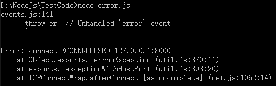

Node 是专注于创建网络应用的，网络应用就需要许多 I/O（输入 / 输出）操作。
JavaScript 包含了 try/catch 功能，但这个方法只有当错误发 生在内联位置时才有用。使用 Node 的非阻塞 I/O 时，你给函数传递了一个回调函 数，这意味着回调函数被事件触发调用时，是不在 try/catch 代码块中的。我们需要 为异步运行情景提供差错处理的方法.
//通过error事件捕捉I/O错误
var http=require('http');
var opts={
//这里需要提前打开本地服务器程序，端口为9000
host:'localhost',
port:8000,
path:'/'
}
try{
http.get(opts,function(res){
console.log('Get called?');
})
}
catch(e){
console.log("Catch an error");
}
当调用 http.get() 时，实际会发生什么呢？我们传入了一些参数让 I/O 进行指定 的操作，同时还绑定了回调函数。当 I/O 操作完成时，回调函数会被调用，但是， http.get() 在设置好回调函数后，就直接完成并继续运行下去了。
如果在 GET 过程中发生错误，将不会被 try/catch 捕获。这时将端口改变为8000.
I/O 错误的隔离在 Node 命令行解析器中更为明显，因为变量返回时如果没有赋值， 命令行会打印出这个变量。我们可以看到 http.get() 函数的返回变量是新创建的 http.ClientRequest 对象，这就表示 try/catch 完成了它的工作，保证了特定的 代码返回时没有发生错误。但是，因为 port 是不存在的，将会在 I/O 请求时出 错，也就是回调函数不会成功调用。try/catch 并不能解决此问题，因为错误发生在 这个 JavaScript 代码外面。当 Node 遇到错误想要报告时，我们早已不在那个栈上 了。我们已经在处理另一个事件。
error事件捕获I/O错误在 Node 中，我们利用 error 事件来处理此问题。这是一个特殊的事件，当错误发 生时它就会触发。这让参与 I/O 的模块触发另外一个事件给负责处理错误的回调函 数。error 事件让我们能够处理所有使用的模块中可能出现的问题。让我们以正确方式写一下前面的例子。
var http=require('http');
var opts={
host:'localhost',
port:8000,
path:'/'
}
var req=http.get(opts,function(res){
console.log("Get called.");
})
req.on('error',function(e){
console.log("Got error.");
})
通过使用 error 事件，我们可以处理对应的错误（在本例中是忽略错误）。最重要 的是，我们的程序存活下来了。就像 JavaScript 的 try/catch 那样，error 事件捕获 了所有类型的异常。一种更好的常用异常处理方法是，对已知的错误条件设置好检 查条件，并尽可能处理它们。此外，捕获剩余的错误，记录下来，并保持你的服务 器继续运行也许是最佳的方法。